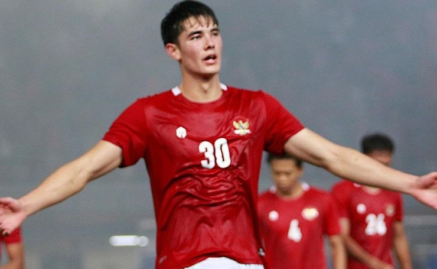
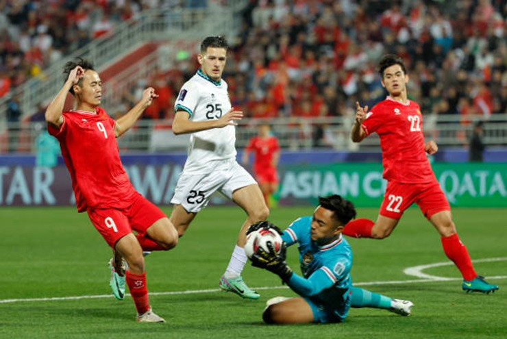

Mặc dù nhập tịch khá nhiều cầu thủ và đang hừng hực khí thế chờ ĐT Việt Nam trên sân nhà sau chiến thắng tại Asian Cup, nhưng ĐT Indonesia vẫn gặp trục trặc trong quá trình chuẩn bị trước thềm trận đấu quan trọng giữa hai đội ở vòng loại World Cup 2026 (20h30, 21/3). 2 chấn thương ở hàng phòng ngự đã khiến HLV Shin Tae Yong bị thiệt đáng kể.
Nhà cầm quân người Hàn Quốc gọi lên 28 cầu thủ cho đợt tập trung này nhưng trước trận đã có 3 cầu thủ của ông bị đau, bao gồm Jordi Amat và Elkan Baggott ở hàng phòng ngự cùng với Yance Sayuri ở hàng tiền vệ. Khi chốt danh sách HLV Shin Tae Yong chỉ gọi lên bổ sung Arkhan Fikri cho vị trí của Sayuri.
Việc 2 cầu thủ quan trọng ở hàng phòng ngự Indonesia vắng mặt sẽ là cơ hội cho ĐT Việt Nam bởi những người thay thế chưa chắc sẽ chơi tốt. Baggott chơi lệch trái trong sơ đồ 3 trung vệ trong khi Amat thường làm nhiệm vụ ở chính giữa hàng thủ, và trong khi vị trí của Amat đã có đội phó Rizky Ridho thay thế, Baggott sẽ được thế chỗ bởi Jay Idzes, cầu thủ có thể hình 1m91.
Mặc dù Idzes có lợi thế chiều cao và là một cầu thủ có kinh nghiệm châu Âu (đá tại Hà Lan và Italia), nhưng trung vệ này sẽ ở thế bất lợi khi đấu các tiền đạo tốc độ dù anh không phải quá chậm. Do đó ĐT Việt Nam có thể khai thác vào vị trí của anh này bằng các đường chuyền xẻ nách, nhưng để vượt qua Idzes thì cần đến tốc độ tốt và đây là cơ hội cho tiền đạo Văn Toàn.
Mùa này Văn Toàn đã đá lệch phải trên hàng công Nam Định và giữ được phong độ tốt cho đội đầu bảng V-League. Văn Toàn thường xuyên có các pha xâm nhập vào hành lang phải, dùng tốc độ để bứt xuống trước khi có những bước xử lý tiếp theo trong khu cấm địa. Cách chơi của Văn Toàn có độ biến hóa cao khi được khai thác hợp lý và lúc này anh lại đang có phong độ cao.
Mặt khác HLV Shin Tae Yong hẳn cũng biết khả năng của Văn Toàn nên ông sẽ rất cẩn thận với việc bố trí khu vực lệch trái của hàng thủ Indonesia. Sơ đồ 3 trung vệ không lạ với Idzes do anh đang đá với sơ đồ đó ở Venezia, nhưng nếu Văn Toàn tạo được sự đe dọa lên Idzes, HLV Shin sẽ phải kéo hậu vệ trái Pratama Arhan về để bọc lót và như vậy hàng thủ Việt Nam sẽ bớt phải đối phó với Arhan, người có khả năng leo biên đều đặn và đặc biệt ném biên rất xa.
Văn Toàn ra sân từ ghế dự bị vỏn vẹn có 18 phút trong trận gặp Indonesia ở Asian Cup. Với tình hình lực lượng mới đây của Indonesia lẫn phong độ tốt của anh, giờ là lúc HLV Philippe Troussier cân nhắc nghiêm túc về việc cho Văn Toàn vào sân từ đầu.